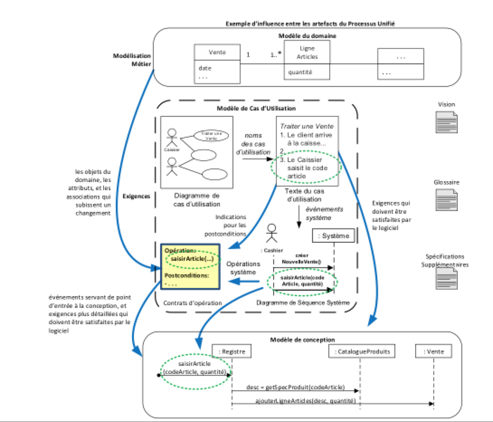
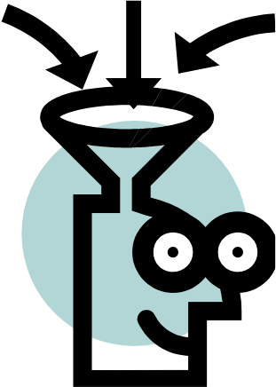
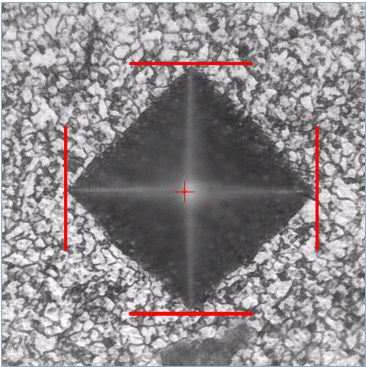
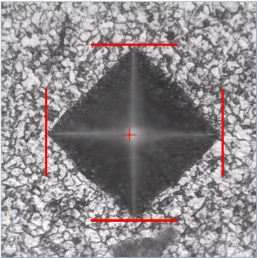
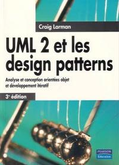
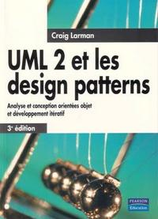

Quelles sont les meilleures pratiques pour apprendre?
Mes conseils pour réussir
L’étudiant qui réussit dans mes cours…
s’assied vers l’avant de la salle,
est motivé pour apprendre et pour participer,
est bien discipliné,
est organisé,
cherche de l’aide d’une façon proactive,
sais que le multitâche nuit à la qualité.
proactif
Domaine: psychologie
Auteur: Office québécois de la langue française, 2002
Définition: Qui exerce un effet sur des faits ou des processus à venir
Exemple: Pompiers qui visitent les maisons pour vérifier les détecteurs de fumée
Ingénieur logiciel, le meilleur métier au monde ?
Revers de la médaille: certains reprochent à leur métier la nécessité de se mettre régulièrement au niveau. Ils trouvent difficile de suivre les évolutions avec les langages et les nouvelles pratiques qui ne cessent d’apparaître ou de se modifier
🧑👩💻👨🏫
Ingénieur logiciel, le meilleur métier au monde ?
Autre inconvénient: la solitude, notamment pour les développeurs qui préfèrent travailler depuis chez eux. Un choix qui leur offre un emploi du temps flexible, mais qui les mène à passer de longues heures sans interagir avec le moindre collègue.
Traiter une vente. Un client arrive à la caisse avec les articles qu’il souhaite acheter. Pour enregistrer chaque article, le caissier utilise le système POS, lequel présente le détail des articles et le montant total des achats. Le client fournit les informations nécessaires pour le règlement. Le système valide et enregistre ces informations, puis met à jour les quantités en stock et imprime le ticket de caisse destiné au client. La vente est terminée et le client peut quitter le magasin.
De la description du cas d’utilisation au diagramme de cas d’utilisation
Cas d’utilisation
Que fait le système et non comment
Trois types:
Abrégé
Un paragraphe décrivant le scénario principal
Informel (casual)
Plusieurs paragraphes décrivant plusieurs scénarios
Détaillé
Toutes les étapes et les variantes sont indiquées en détail, de même que les préconditions et les garanties en cas de succès
Définitions
Acteur
Entité qui a un comportement, comme une personne (identifiée par un rôle)
Scénario
Suite spécifique d’actions et d’interactions entre un ou plusieurs acteurs et le système. C’est une histoire particulière de la façon dont on utilise un système
Transformation au niveau des données dans le MDD suite à l’exécution d’une opération du DSS
Expliquer en vos propre mots se qui ce passe au niveau des données de votre modèle du domaine lorsque vous appellez chacune des opérations système.
Opération système == contrat
Contrats d’opération
Qu’est-ce qu’un contrat d’opération?
Pourquoi les contrats d’opération?
*Qu’est-ce qu’un contrat d’opération?
Un document décrivant ce qui est arrivé après l’exécution d’une opération système.
Éléments d’un contrat d’opération
Signature de l’opération système: saisirArticle(codeArticle: CodeArticle, quantité: int)
Postconditions (3 formes, vocabulaire du MDD)
création (ou suppression) d’instances;
modification des valeurs des attributs;
formation (ou rupture) d’associations.
*Contrat d’opération:
Opération:créerNouvelleVente()
Références croisées: Cas d’utilisation : Traiter Vente
Postconditions:
une instance v de Vente a été créée
v a été associée au Registre
des attributs de v ont été initialisés
Pourquoi les contrats
Facilite la conception OO (RDCU)
Liste d’épicerie (quoi faire)
RDCU s’inspire du MDD (réduire décalage des représentations)
Donne des conditions pour tests
Aide à valider le MDD
Exercice contrats (Google Classroom)
Voir seance-03-exercice-reserverLivre
Contrats
Quel sont les trois type de postconditions?
Contrats
Postcondition:
« … sur la base de correspondance avec clé. »
implique une multiplicité de 1 à plusieurs
implique l’utilisation d’une Map (tableau associatif)
Contrats - maps
sur la base de correspondance avec “Clé”
implique l’utilisation d’un tableau associatif (Map<>)
Chp11 Contrats
Quels sont les éléments d’un contrat?
Quelle est la relation entre le DSS et les contrats?
Que décrivent les postconditions?
Influence d’artefacts du Processus Unifié

Contrats - Erreurs fréquents
Ne pas mettre les paramètres de l’opération
Inventer de nouveaux paramètres
Ne pas utiliser un paramètre pour trouver une instance d’un objet lorsque le contrat spécifie que la relation est faite sur la base de correspondance avec une clé.
Les postconditions ne sont pas écrites au passé.
Les postconditions ne sont pas cohérentes avec le MDD
faire quelque chose lui-même (ex. effectuer un calcul)
déclencher une action d’un autre objet
contrôler et coordonner les activités d’autres objets
Responsabilités de savoir
connaître les données privées encapsulées
connaître les objets connexes
connaître des éléments qu’il peut dériver ou calculer

La CPR est une métaphore pour la COO
On y assimile les objets à des personnes qui
ont des responsabilités
collaborent avec d’autres personnes
réalisent une tâche
CPR = Conception pilotée par les responsabilités
Réaliser vos premiers RDCU
Concrètement: Un RDCU est un diagramme de séquence ou de communication qui réalise le contrat associer à l’opération système et s’assure de pouvoir retourner les informations demandées.
Créer un contrôleur
Faire un diagramme de séquence ou de communication pour chaque opération système.
🤠:Pourquoi faire une RDCU?
Pour apprendre à faire une solution modulaire et intuitive
RDCU: aspects
Proposer des classes logicielles correspondant aux classes conceptuelles
On groupe les types qui sont fortement apparentés, parce qu’ils participent à une finalité, un service, des collaborations, une politique et une fonction qu’ils ont en commun.
P.ex. le package “Tarification” contient des classes liées à la tarification des produits.
C’est intuitif.
Groupement par cohésion relationnelle
Mettre dans un package des classes qui se sont fortement couplées les unes aux autres.
Les packages sont l’unité de base de développement et de livraison (on ne développe rarement qu’une seule classe)
Créer un package par tâche de livraison
… et par groupe de classes instables [2/]
Si un ensemble de classes dans un package a une tendance à évoluer ensemble, p.ex. on remarque qu’à chaque itération, c’est toujours les mêmes 5 ou 10 classes dans un package qui ont été modifiées.
Exemple concret – chaque fois que l’on change le schéma de la BD il y a des changements dans plusieurs classes, surtout les appels à la méthode “sqlquery()”
Créez un package dans le package (sous package) pour isoler les classes ayant une tendance à changer ensemble
Notez que la tendance de ce genre de changement n’est pas visible dans les premières itérations.
Les plus responsables sont les plus stables
Les packages « les plus responsables » engendrent le plus de dépendances et devraient être plus stables.
Quel GRASP pour rendre un package plus stable?
Factoriser les types
Organiser les types qui peuvent être utilisés indépendamment ou dans des contextes différents en packages distincts.
Fabriques pour découpler
des classes concrètes
Renforcer la stabilité des packages consiste à réduire leur dépendance à des classes concrètes qui appartiennent à d’autres packages
Visibilité et encapsulation dans les packages
Organiser les classes dans un package avec la bonne visibilité
Visibilité et encapsulation dans les packages
Bloquer l’accès à un attribut ou une méthode d’une classe avec private
Bloquer l’accès à une classe dans un package?
Déclarer la classe class X {...} (package protection, sans mot clé)
GRASP Protection des variations
Client ne devrait pas accéder aux implémentations de Forme.
Visibilité et encapsulation dans les packages
Cette visibilité empêche les transgressions de l’encapsulation
Comment instancier les classes invisibles?
FabriqueForme permet à Client d’instancier les Formes concrètes, bien qu’elles lui soient invisibles
Principe: pas de cycles dans les packages
Si un groupe de packages a une dépendance cyclique, on peut devoir les traiter comme un seul grand package. Cela n’est pas souhaitable, car la livraison de packages volumineux (ou d’agrégats de packages) aggrave le risque d’effets néfastes.
Factoriser les types participant au cycle dans un package plus petit.
En équipe de 4 personnes, réaliser les modèles suivant:
MDD(avec catégorie de classe et d’association),
DSS,
Contrats,
RDCU
DCL
Pour les cas d’utilisations suivants:
Étude de cas
Système d’échange de livres universitaires
Le Bureau du Développement Durable (BDD) de l’Université a mis en place un système d’échange de livres aux fins de développement durable et pour réduire les coûts pour les étudiants (les clients du système). La version initiale est rudimentaire et ne permet que deux fonctionnalités :
CU01 - Ajouter un livre à échanger
Acteur principal : Client (étudiant)
Préconditions :
Le Client est identifié (par son nom d’utilisateur) et authentifié par son mot de passe.
Scénario principal (succès)
Le Client démarre un nouvel ajout de livre.
Le Client entre le code ISBN du livre, ainsi que le code de sa condition.
Le Système enregistre le livre et présente sa description (titre, nombre de pages, auteurs, maison d’édition, no d’édition ). Le Client répète les étapes 2 à 3 jusqu’à ce qu’il ait saisi tous les livres à échanger.
Le Système présente la liste de livres que possède le Client.
Cas alternatifs
3a. Le système affiche un message d’erreur puisque le livre n’existe pas.
CU02 - Proposer un échange de livres
Acteur principal : Client (étudiant)
Préconditions :
Le Client est identifié (par son nom d’utilisateur) et authentifié par son mot de passe.
Scénario principal (succès)
Le Client démarre une nouvelle proposition d’échange de livres.
Le Système présente une liste d’autres Clients dans le système ainsi que le(s) livre(s) qu’ils ont à échanger.
Le Client sélectionne un autre Client (le Client Proposé) à qui il veut proposer un échange.
Le Système présente la liste de livres que possède le Client Proposé et une liste de livres que possède le Client.
Le Client ajoute à la proposition d’échange un livre. Si c’est un de ses livres, alors c’est à offrir dans la proposition. Sinon c’est un livre du Client Proposé et c’est à recevoir dans la proposition. Le Client répète l’étape 5. jusqu’à ce qu’il soit satisfait de la proposition.
Le Système présente le nombre total de livres à offrir et à recevoir et demande au Client de confirmer la proposition.
Le Client confirme et le Système enregistre sa proposition d’échange avec la date et l’heure.
Le Système envoie un courriel au Client Proposé pour l’informer de la proposition d’échange.
You are not allowed to write any production code at all until you have written a failing unit test.
You are not allowed to write more of a unit test than is sufficient to fail and not compiling is failing.
You are not allowed to write more production code than is sufficient to pass the currently failing test. These three last gives us the perfect low-level documentation for a system code examples.
Réf: Documenting Software Architectures: Views and Beyond, 2e édition, Felix Bachmann, Len Bass, Paul C. Clements, David Garlan, James Ivers, Reed Little, Paulo Merson, Robert Nord, Judith A. Stafford
Esquissez le diagramme d’activités lors de la réception de voitures
louées (après la location) dans une compagnie. Pour le diagramme, faites
att ention à la notation UML: cela comprend les objets (pour la
voiture et pour la facture), le début et la fin de l’activité, les
débranchements, les jointures, les décisions et les fusions.
Scénario
Le client rend la voiture et les clés.
Le réceptionniste note le kilométrage et le niveau d’essence pour calculer la facture.
Le client paye sa location, selon le montant sur la facture et part après.
L’agent inspect la voiture pour la proprété. Si elle n’est pas assez propre, alors l’agent doit laver, rincer et sécher l’extérieur et nettoyer l’intérieur. Ce travail devrait commencer le plus vite possible, après que le réceptionniste ait finit de noter les informations pour la facture.
Les rôles sont le ______ le ________ (qui gère la documentation et le paiement de la location) et ______ (qui gère le traitement des voitures avant la prochaine location).
*Exercices - Modéliser d’une dynamique de stationnement
Client arrive, entre sa carte de crédit, le système enregistre la carte et la remet au client, le clientl reprend sa carte, le système ouvre la barrière, le client entre pour se stationner, le système ferme la barrière. Le client se présente à la sortie, présente sa carte de crédit, le système imprime le recu, le client reprend sa carte de crédit, prend le recu, le système ouvre la barrière, le client peut alors sortir, le système détecte la sortie et ferme la barrière.
Un composant n’est pas clairement défini dans l’UML:
« Un composant est la partie modulaire d’un système qui encapsule son contenu et dont la manifestation est remplaçable dans son environnement. Il définit son comportement en termes d’interfaces fournies et requises. Ainsi, un composant peut être utilisé comme un type dont la conformité est définie par ces interfaces fournies et requises. »
They have to exist. Sales and marketing people are talking about them. Components are not a technology. Components are about how customers want to relate to software.
They want to be able to buy their software a piece at a time, and to be able to upgrade it just like they can upgrade their stereo.
They want new pieces to work seamlessly with their old pieces, and to be able to upgrade on their own schedule, not the manufacturer’s schedule.
They want to be able to mix and match pieces from various manufacturers. This is a very reasonable requirement. It is just hard to satisfy.
Ressource de traitement physique (p.ex. de l’électronique numérique), dotée de services de traitement et de mémoire destinés à exécuter un logiciel. Ordinateur classique, cellulaire, etc.
Ressource de traitement logiciel qui s’exécute au sein d’un nœud externe (comme un ordinateur) et offrant lui-même un service pour héberger et exécuter d’autres logiciels.
Nœud d’environnement exécution
Système d’exploitation (OS) est un logiciel qui héberge et qui exécute des programmes
Machine virtuelle (JVM ou .NET)
Moteur de base de données (p.ex. PostgreSQL) exécute les requêtes SQL
Navigateur Web héberge et exécute JavaScript, applets Flash/Java
UML est un langage de modélisation général qui inclut un large éventail de concepts, notations et diagrammes.
Avant d’intégrer UML dans un processus de développement , il est fondamental de définir correctement une méthodologie pour prendre en charge son utilisation.
La définition d’une méthodologie de développement facilitera l’intégration et l’adoption d’UML , augmentera la qualité des modèles et augmentera la productivité des développeurs.
Méthodologie de développement UML
Pour chaque phase de développement , vous devez définir
Ensemble de diagrammes UML utilisés dans la phase
Rôle de chaque diagramme
Sous-ensemble de la notation UML utilisée
Remarque: certains diagrammes peuvent jouer différents rôles dans différentes phases du processus de développement .
Par exemple . Les diagrammes de séquence peuvent être utilisés pour décrire les interactions entre le système et les acteurs lors de la phase de modélisation de cas d’utilisation , fournir des détails sur l’exécution de scénarios lors de la phase de conception et capturer des traces d’exécution lors de la phase de test.
Définir un ensemble de règles et de directives pour développer des éléments de modèle aux différentes phases de développement
Personnaliser / Customiser UML
UML fournit un ensemble de concepts, notations et diagrammes pouvant être utilisés dans un large éventail de contextes de développement.
Cependant, seul un sous-ensemble de ces éléments est requis dans tout contexte de développement
Le mécanisme de profil UML peut être utilisé pour personnaliser le langage UML pour des domaines de développement spécifiques.
Mais la plupart des outils UML n’ont pas réussi à fournir un support de premier ordre pour la personnalisation et la modélisation spécifique à un domaine.
Utilisez la décomposition et le packaging pour structurer votre modèle de cas d’utilisation
Définir l’ensemble des acteurs
Définir / adopter un ensemble de guidelines et une convention de nommage
Utiliser un modèle de description de cas d’utilisation «standard»
Éloignez-vous de trop de détails , vous en parlerez plus tard
Remarques:
Rappelez-vous que l’un des objectifs principaux des cas d’utilisation est de communiquer avec les parties prenantes , qui incluent des personnes de divers horizons.
Pas de solution magique , écrire des cas d’utilisation est un art!
Les meilleures pratiques – Structure
Respecter le décalage de représentation
Commencez par définir les classes directement dérivées des exigences et du modèle du domaine. Ajoutez de manière itérative de nouvelles classes et raffinez -les selon vos besoins au fur et à mesure de votre progression dans le processus de conception
Définissez les principaux attributs de la classe . Ajoutez de manière itérative de nouveaux attributs au fur et à mesure que vous avancez dans le processus de conception de manière itérative
Utiliser une convention de nommage cohérente pour les classes et les attributs
Les meilleures pratiques – Diagramme d’intéraction
Se concentrer sur le comportement global du système et la communication entre le système et l’ensemble des acteurs
Ne commencez pas à prendre des décisions de conception à ce stade
Concentrez-vous sur les principaux scénarios , n’essayez pas d’être exhaustif
Décomposer les diagrammes de séquences longs en fragments plus petits, le cas échéant
Définir des interactions séparées et utiliser « Interaction Use » pour faire référence à des interactions définies séparément
Les meilleures pratiques – diagramme activité
Choisissez le «bon» niveau d’abstraction / détails
Évitez le piège de spécifier les détails de conception,… vous le ferez plus tard!
Maintenir la cohérence avec les descriptions de cas d’utilisation
Ne signifie pas une traçabilité individuelle
Concentrez-vous sur la clarification et la compréhension du modèle
Les meilleures pratiques – “Diagramme d’état”
Choisissez le «bon» niveau d’abstraction / détails
Évitez le piège de spécifier les détails de conception,… vous le ferez plus tard dans le processus de conception!
Maintenir la cohérence avec le modèle de cas d’utilisation
Ne signifie pas une traçabilité formelle individuelle
Exploiter les relations de cas d’utilisation (et de scénarios) pour structurer les machines d’états
Ne définissez pas une machine d’états pour chaque classe , mais uniquement pour les classes actives
protection contre les variations dans le mécanisme de sortie
pas un objet de l’IU
indépendant de l’application
Patron: Dialogue d’erreur
fig A35.11 p 592
Problème - service non disponible
Dans le cas ou on doit envoyer les ventes au services de comptabilité, il faut agir le plus rapidement possible, donc directement communiquer avec les services de comptabilité externes.
Dans l’éventualité ou le service comptable est temporairement non disponible, comment peut-ont éviter que cette faute devienne une défaillance.
Patron Proxy (GoF)
Problème
l’accès direct à un objet est impossible (ou est indésirable). Que faire?
Solution
Utiliser un objet proxy qui est un substitut à un objet
Le proxy implémente la même interface
Cela ajoute un niveau d’indirection
Proxy
Freeman, Eric; Robson, Elisabeth; Bates, Bert; Sierra, Kathy. Head First Design Patterns.
Proxy
Freeman, Eric; Robson, Elisabeth; Bates, Bert; Sierra, Kathy. Head First Design Patterns.
Patron Proxy (GoF)
fig. F30.12
Les Proxy dans PoS
Proxy de redirection
Exercice
Dette technique
Rappel : Spectre de la conception de Neal Ford.
Dette technique : Risque
La dette est une forme de risque.
Elle apporte des bénéfices ou des pertes, selon la quantité d’intérêt à payer.
Essentiellement, il est dans votre intérêt, en tant que développeur, en tant qu’équipe, d’encourager de nombreux tests plus bas dans les piles présentées ici. Cela commence par des tests unitaires complets et vérifiés. Cela continue avec une discipline de test solide et reproductible (pour laquelle je recommande l’automatisation des tests).
Pourquoi? Parce que - lorsque vous vous déplacez plus haut dans la pile, ce fichu bug que quelqu’un a enregistré est caché derrière couche après couche de code. Plus le bogue est éloigné du niveau d’unité, plus les composants et les variables d’environnement sont impliqués. Plus ceux-ci sont impliqués, plus il est difficile d’identifier et de réparer, et plus le coût est élevé.
Un testeur manuel exécute des tests 8 heures par jour et rentre chez lui. À ce moment, les tests s’arrêtent. Avec l’automatisation des tests, nous pouvons exécuter des tests 16 heures de plus par jour (dans le meilleur des cas… bien sûr) pour le même coût, ce qui réduit le coût moyen des heures de test.
Coût total : 101250$/mois
3 developpeurs x 21 jours/mois * 16h/jour de test * 5 fois plus rapide = 5040h equivalent
7 developpeurs x 135h/mois = 945h
Avantages
Dans ce scénario, nous avons considérablement réduit le coût de chaque heure de test de 78 $ à 17,54 $, ce qui est un avantage que le directeur financier comprendra clairement. Ou vous pouvez le voir de cette façon; nous avons augmenté les tests de 1 350 heures à 5 985 heures équivalentes et gagné 315 000 $ de tests par mois pour le même coût (5 040 fois le coût horaire moyen d’un testeur).
Valeur commerciale
Améliorez la qualité des logiciels
Évitez les problèmes de fonctionnement
Maintenir une bonne image client
Évitez les problèmes juridiques
Diminuer le coût de la correction des bogues de 5 fois
Valeur informatique
Simplifie les tâches de routine
Exécutez plus de tests sans augmenter les coûts dans le même temps
Augmentez l’étendue de la couverture
Trouvez les défauts difficiles à détecter plus tôt, lorsqu’ils sont plus faciles à corriger
Améliorez la qualité du logiciel
Êtes-vous d’accord pour dire que le retour sur investissement de l’automatisation des tests est important?


 



 



 fig. F33.17
fig. F33.17 fig. F30.19
fig. F30.19 fig. F30.18
fig. F30.18 fig. F30.22
fig. F30.22


 fig. F14.21
fig. F14.21 fig. F23.7
fig. F23.7


 fig. F26.22
fig. F26.22


 fig. F30.4
fig. F30.4